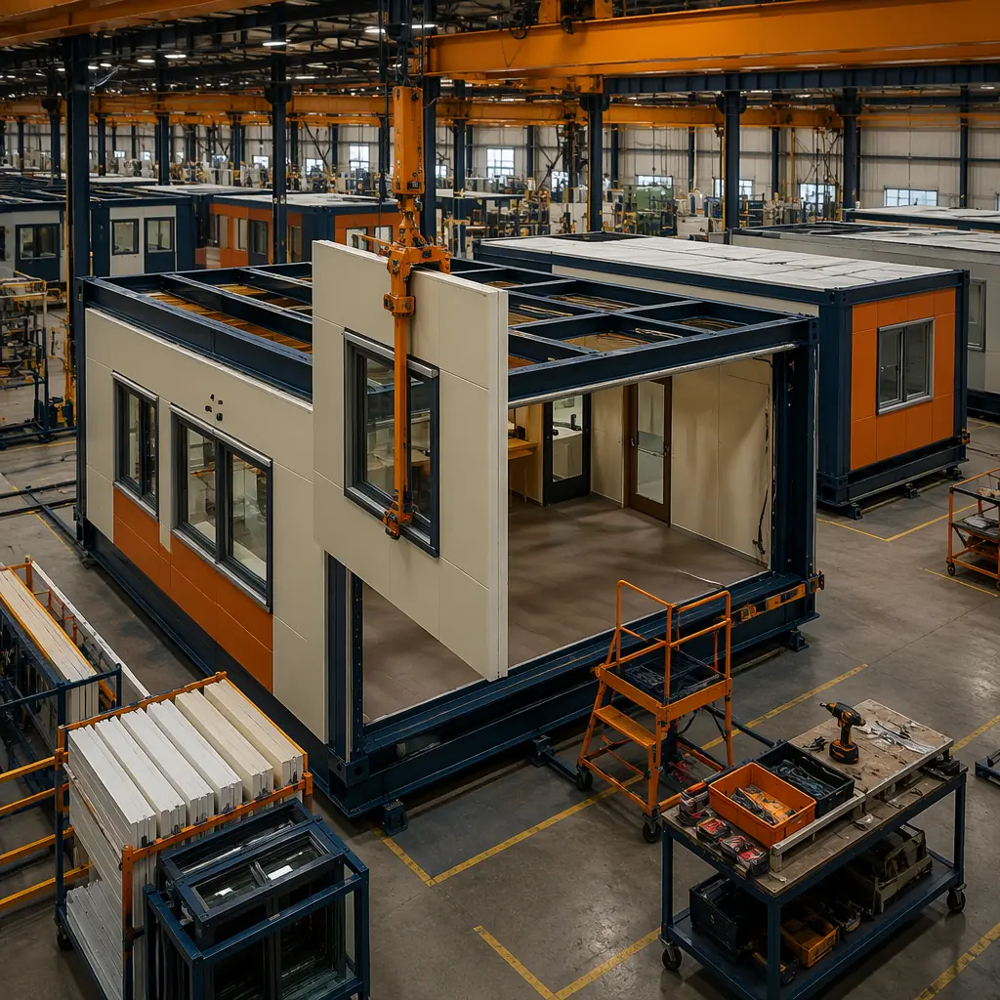
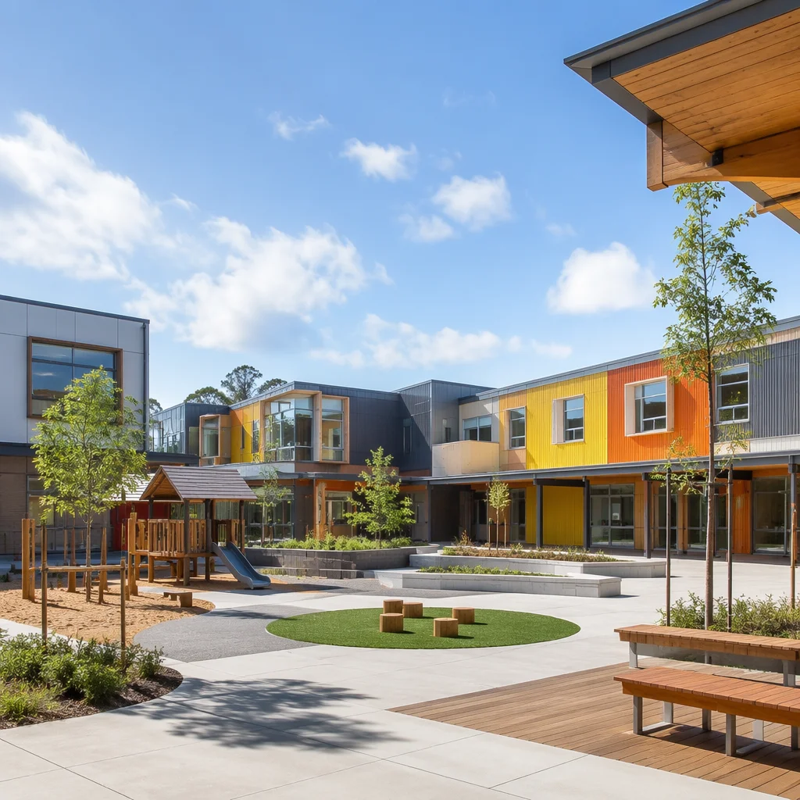

School districts across North America face a growing crisis: student populations are surging, aging buildings need replacement, and construction timelines measured in years simply cannot keep pace. When a district needs 12 new classrooms by September, waiting 18-24 months for traditional construction is not an option. Modular construction changes this equation — delivering code-compliant, permanent K-12 school buildings in 8-12 months, often completing installation during a single summer break.

The K-12 School Construction Crisis
American school infrastructure is under unprecedented pressure. According to the National Center for Education Statistics, the average public school building in the United States is 44 years old. Over 53% of school districts report needing to replace or significantly renovate at least one building. The Government Accountability Office estimates a $85 billion backlog in deferred maintenance across K-12 facilities nationwide.
Traditional school construction amplifies this problem in three ways:
- Schedule constraints: School construction can only proceed during summer breaks and limited holiday windows, stretching a 12-month build into 2-3 calendar years of piecemeal work
- Weather dependency: Foundation work, framing, roofing, and exterior finishes all depend on favorable conditions — a single rainy season can push handover past the September deadline
- Disruption to learning: On-site construction generates noise, dust, and safety hazards that affect students and staff in adjacent buildings for months at a time
How Modular Solves the K-12 Timeline Problem
Modular school construction decouples building production from the school site. Classroom modules — complete with walls, flooring, lighting, HVAC, windows, and even built-in storage — are manufactured in our factory while site work proceeds simultaneously. By the time the foundation is ready, the classrooms are ready. The result: a complete school wing that would take 18 months conventionally is delivered in 8-10 months, with on-site activity compressed into a single summer break.

The Parallel Construction Timeline
| Phase | Traditional | Modular |
|---|---|---|
| Design & Permitting | 4-6 months | 3-4 months (BIM-driven) |
| Site Work & Foundation | 2-3 months | 2-3 months (parallel with factory) |
| Building Production | 8-12 months | 10-16 weeks (factory) |
| On-Site Assembly | 4-6 months | 4-8 weeks (crane placement) |
| Total | 18-27 months | 8-12 months |
For school districts, the single most valuable feature of modular construction is that the bulk of the work happens off-site. When modules arrive, they're already 85-90% complete — walls painted, flooring installed, electrical and data wiring run, HVAC operational. Assembly at the school site is measured in weeks, not months.
Cost Comparison: Modular vs. Traditional School Buildings
School district administrators are rightfully cost-conscious — every dollar spent on construction is a dollar not spent on teachers, technology, and programs. Modular construction delivers measurable savings across three categories:
Direct Construction Costs
Factory-built classrooms cost $180-$240 per square foot for a fully finished educational space, including HVAC, lighting, data infrastructure, and interior finishes. Traditional school construction in the same markets averages $250-$350 per square foot — a 20-30% premium. The savings come from factory efficiency: bulk material purchasing, weather-independent production, reduced waste, and elimination of trade-stacking delays. Even in high-cost markets like California and the Northeast, our modular school projects consistently come within 5% of budget — a stark contrast to traditional construction, where cost overruns average 15-20%.
Soft Costs and Financing
Each month of construction is a month of construction-loan interest, site supervision, temporary facilities, and security. Compressing the schedule from 20 months to 10 months cuts these soft costs roughly in half:
- Construction loan interest: $120K-$180K saved on a typical $8M school wing
- Site supervision & security: $60K-$90K saved
- Temporary classroom rentals: Eliminated entirely — students move directly into permanent modular classrooms, avoiding $50K-$200K in portable classroom leasing
Avoided Costs: The Portable Classroom Trap
Many districts resort to portable trailers as a stopgap — but portables are not cheap. A single portable classroom costs $15K-$25K per year in lease, utility hookups, maintenance, and ADA-compliant ramps. A school relying on 8 portables for 3 years while awaiting traditional construction spends $360K-$600K — money that vanishes with zero long-term asset value. With modular construction, those same 8 classrooms are delivered as permanent, bank-financeable assets that last 50+ years. As we've demonstrated across 500+ projects, modular buildings are indistinguishable from site-built structures in appearance, durability, and resale value.

Code Compliance and Safety Standards
K-12 educational facilities are subject to the most stringent building codes of any occupancy type. Modular construction not only meets these standards — in several critical areas, it exceeds them.
Structural Performance
Our classroom modules are engineered for a minimum design load of 100 psf (pounds per square foot) live load — 150% of the IBC requirement for educational occupancies. This over-engineering serves two purposes: it ensures long-term durability under heavy use, and it makes the modules road-worthy during transport. Every module is built on a structural steel chassis with moment-resisting connections, seismically rated to Seismic Design Category D.
Fire Safety
Each classroom module is a self-contained fire compartment with 2-hour fire-rated walls, Type X gypsum board throughout, and hard-wired smoke detection linked to the building fire alarm system. Sprinkler systems are pre-installed in the factory — pipes pressure-tested and inspected before the module leaves our facility, eliminating the coordination errors common in field-installed fire suppression.
Indoor Air Quality and Acoustics
K-12 classrooms have unique demands. Our modules achieve:
- STC 55 acoustic separation between classrooms — a student in one room cannot hear a lesson in the adjacent room. This exceeds the ANSI S12.60 standard of STC 50 for core learning spaces by 5 points
- VOC-free materials throughout: zero-VOC paint, formaldehyde-free millwork, low-emitting flooring adhesives — all curing under controlled factory conditions, not in the elements
- MERV 13 filtration on all HVAC units, delivering 6 air changes per hour in occupied mode — exceeding ASHRAE 62.1 requirements for classrooms by 20%
These quality metrics are not aspirational — they are standard across every MODURA education project. Factory production makes this consistency achievable at scale, something no site-built project can match. As we've documented in our modular vs. traditional comparison, factory quality control eliminates the trade-to-trade variation that plagues conventional school construction.
Real Project: 24-Classroom Middle School Wing, Colorado
In 2025, a Colorado school district needed a 24-classroom addition to accommodate 600 incoming students — with a hard September deadline for occupancy. Traditional construction estimates came in at 20 months, putting the project 14 months past the required handover date.
The district turned to modular:
- Project scope: 24 classrooms, 2 science labs, faculty offices, and restroom cores — 38,000 total square feet
- Factory production: 48 modules built over 14 weeks at our Denver-region facility
- Site preparation: Foundation, utility rough-ins, and data conduit completed during spring semester (March-May)
- Module delivery & assembly: All 48 modules delivered, craned into position, and structurally connected in 16 days — during July, with zero disruption to summer school programs in the main building
- Final connections: Mechanical, electrical, and data interconnections completed in 5 weeks (August)
- Occupancy: Students walked into brand-new, permanent classrooms on September 5 — 10 months from contract signing
| Metric | Traditional Estimate | Modular Actual |
|---|---|---|
| Total Schedule | 20 months | 10 months |
| On-Site Activity | 14 months | 8 weeks |
| School Disruption | 3 academic years | 1 summer break |
| Final Cost | $9.5M estimated | $7.8M actual |
| Punch-List Items | ~200 (industry avg) | 31 |
The $1.7M savings — 18% below the traditional estimate — was redirected by the district into technology upgrades: interactive displays, a new STEM lab, and 1:1 device program expansion. This outcome reflects a pattern we've documented in our comprehensive ROI analysis: modular school projects not only deliver faster but consistently come in under traditional cost benchmarks, freeing capital for educational priorities.
Is Modular Right for Your School District?
Modular K-12 construction works best for districts facing one or more of these conditions:
- Hard deadline: You need classrooms by a specific September — not "sometime next year"
- Capacity surge: Enrollment growth that outpaces traditional construction schedules
- Aging facility replacement: Replacing buildings while minimizing disruption to ongoing operations
- Budget pressure: Fixed construction budgets that cannot absorb the 15-20% overruns common in site-built projects
- Site constraints: Tight urban sites where months of on-site construction activity would impact student safety
The ideal project size is 8+ classrooms — enough to capture the efficiency advantages of factory production. But even smaller additions of 4-6 classrooms benefit from the speed advantage. For larger district-wide programs, our approach scales linearly: a 100-classroom program across 4 campuses moves through the factory in parallel, with each school site receiving modules sequenced to its specific academic calendar.
MODURA has delivered 500+ projects across 18 countries, and our education portfolio spans K-12 schools, university student housing, and research facilities. Every project is backed by ISO 9001 quality management and ISO 14001 environmental management certifications — the same standards that govern aerospace and medical device manufacturing.
If your district is evaluating construction options for the 2027-2028 school year, contact our education team. We provide a free project assessment including timeline analysis, cost comparison against traditional construction, and a phasing plan built around your academic calendar.